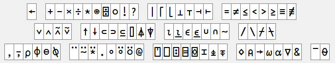

The Outer Product
Creating a Matrix
The "outer product" ∘.F operator applies its function operand F between all combinations of elements of its left and right argument arrays.
F←{⍺+⍵}
1 2 3 ∘.F 10 20 30
11 21 31
12 22 32
13 23 33
For example, the catenate function ⍺,⍵ (comma) will join two lists together. We can use the outer product to join combinations of words from two lists.
1 4 9 , 6 5 4
1 4 9 6 5 4
'joined up' , 'text vectors'
joined uptext vectors
'chicken' 'pork' 'vegetable' ∘., ' chow mein' ' with cashew nuts'
┌───────────────────┬──────────────────────────┐
│chicken chow mein │chicken with cashew nuts │
├───────────────────┼──────────────────────────┤
│pork chow mein │pork with cashew nuts │
├───────────────────┼──────────────────────────┤
│vegetable chow mein│vegetable with cashew nuts│
└───────────────────┴──────────────────────────┘
Note
If you do not see lines around the output of the last expression above in your interpreter session, turn boxing on:
]box on
Was OFF
⍳3 3
┌───┬───┬───┐
│1 1│1 2│1 3│
├───┼───┼───┤
│2 1│2 2│2 3│
├───┼───┼───┤
│3 1│3 2│3 3│
└───┴───┴───┘
Reduce down
Reduce-first F⌿ on a matrix will reduce along columns instead of rows.
∘.÷⍨⍳3
1 0.5 0.3333333333
2 1 0.6666666667
3 1.5 1
+/∘.÷⍨⍳3 ⍝ Sum of rows
1.833333333 3.666666667 5.5
+⌿∘.÷⍨⍳3 ⍝ Sum of columns
6 3 2
Comparison Functions
Up to now the only comparison function we have seen is ⍺=⍵. You should be aware that APL includes logical comparison functions < ≤ = ≠ ≥ >.
Furthermore, all necessary primitives have been explicitly introduced before each problem set. Many APL interpreters include a language bar to aid with typing symbols. Necessary constructs will continue to be introduced in each section. However, you are encouraged to explore the language bar and experiment with the primitive functions, as these constitute your core vocabulary for solving problems.

As you continue through these sessions fewer outright explanations will be given, and you are encouraged to experiment with the given examples to develop an understanding of the language.
It is also worth mentioning at this point that pressing F1 in Dyalog with the text cursor on a primitive will open the help for that primitive.